◆舉辦期間◆
2020年8月10日(一) 17:30～8月24日(一) 11:59
◆有關從者真名的注意◆
在2018年12月31日(二) 23:00以後新配信的主線故事及期間限定活動、一部份關卡、宣傳活動及召喚中，會顯示隱藏真名的對象從者真名。
※2018年12月31日(一) 22:59前已經配信的主線故事、復刻活動、一部份關卡中不在此限。
※本頁面皆為開發中圖片。會有與實際圖片相異的情況。
贈送在2020年8月10日(一)放送的「Fate/Grand Order 迦勒底放送局 5周年SP ～under the same sky～」進行的特別節目連動宣傳活動報酬！

◆領取期間◆
2020年8月11日(二) 3:00～8月18日(二) 2:59
上述期間中，在初次登入至「Fate/Grand Order」的時間點，贈予至禮物箱。
※期間內未登入的話無法領取。
※禮物只能領取1次。
◆贈送內容◆
聖晶石 90個
(7萬RT達成報酬12個×5倍加成=60個、挑戰達成報酬30個)
◆贈送對象◆
2020年8月11日(二) 2:59前通過「特異點F 炎上汙染都市 冬木」的御主對象
※上述時間前，在管理室(ターミナル)畫面的關卡橫幅必須要有「CLEAR」的文字顯示。
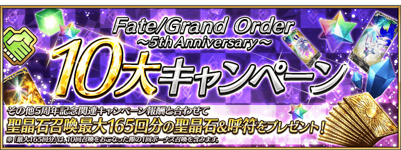
為了記念5周年，實施特別的登入獎勵。
在下述期間中7天內連續登入的話，贈送呼符10張等的豪華報酬！
並且，在期間中登入4次(1天算1次)的話，贈送一共魔力稜鏡200個、英靈結晶・流星之芙芙ALL★4(HP)1張、英靈結晶・日輪之芙芙ALL★4(ATK)1張、稀有稜鏡1個！
◆舉辦期間◆
2020年8月11日(二) 3:00～8月21日(五) 2:59
◆贈送對象◆
2020年8月20日(四) 2:59前通過「特異點F 炎上汙染都市 冬木」的御主對象
※上述時間前，在管理室(ターミナル)畫面的關卡橫幅必須要有「CLEAR」的文字顯示。
【特別連續登入獎勵】
| 連續登入天數 | 贈送內容 | |
|---|---|---|
| 第1天 |

|
1,000萬QP |
| 第2天 |

|
友情點數 10萬pt |
| 第3天 |

|
睿智的猛火ALL★4(SR) 10張 |
| 第4天 |

|
黃金果實 10個 |
| 第5天 |

|
英靈結晶・太陽之芙芙ALL★3(ATK) 10張 |
| 第6天 |

|
英靈結晶・星之芙芙ALL★3(HP) 10張 |
| 第7天 |

|
呼符 10張 |
※登入獎勵會在每天3:00配發。 ※連連續登入天數中斷後，無法領取之後的禮物。 ※最多能領取7次，但根據成為贈送對象的時間點，可能無法到此上限。
【特別次數登入獎勵】
| 登入天數 | 贈送內容 | |
|---|---|---|
| 第1次 |

|
魔力稜鏡 200個 |
| 第2次 |

|
英靈結晶・流星之芙芙ALL★4(HP) 1張 |
| 第3次 |

|
英靈結晶・日輪之芙芙ALL★4(ATK) 1張 |
| 第4次 |

|
稀有稜鏡 1個 |
※登入獎勵會在每天3:00配發。 ※合計5天內能領取，但根據成為贈送對象的時間點，可能無法到此上限。
在迦勒底之門內每天輪流出現的關卡以期間限定所有的每日關卡AP消耗量變成1/2！(就算在戰鬥中撤退的情況也會是同様的消耗量)
並且，在迦勒底之門內以期間限定開放全種類迦勒底之門內每日出現的關卡「蒐集種火」與「修練場」。
◆舉辦期間◆
2020年8月10日(一) 17:30～8月17日(一) 11:59
◆對象關卡◆
・蒐集種火
【5周年記念】蒐集種火<槍・殺篇>初級、中級、上級、超級
【5周年記念】蒐集種火<劍・騎篇>初級、中級、上級、超級
【5周年記念】蒐集種火<弓・術篇>初級、中級、上級、超級
【5周年記念】蒐集種火<隨機篇>初級、中級、上級、超級
・修練場
【5周年記念】弓之修練場 初級、中級、上級、超級
【5周年記念】槍之修練場 初級、中級、上級、超級
【5周年記念】狂之修練場 初級、中級、上級、超級
【5周年記念】騎之修練場 初級、中級、上級、超級
【5周年記念】術之修練場 初級、中級、上級、超級
【5周年記念】殺之修練場 初級、中級、上級、超級
【5周年記念】剣之修練場 初級、中級、上級、超級
※請注意由於以期間限定出現的「蒐集種火」及「修練場」與平常每天輪流出現的「蒐集種火」及「修練場」關卡不同，不會繼承「關卡情報」。
※每日關卡的詳細如下。
【打開寶物庫之門、蒐集種火 關卡的難易度等】
| 難易度 | 推薦Lv | 消耗AP |
|---|---|---|
| 初級 | 5 | 10→5 |
| 中級 | 10 | 20→10 |
| 上級 | 25 | 30→15 |
| 超級 | 40 | 40→20 |
【修練場 關卡的難易度等】
| 難易度 | 推薦Lv | 消耗AP |
|---|---|---|
| 初級 | 10 | 10→5 |
| 中級 | 25 | 20→10 |
| 上級 | 40 | 30→15 |
| 超級 | 60 | 40→20 |
【每日關卡一覧】
| 星期 | 關卡名 | 做為戰利品可獲得的 主要道具 |
攻略推薦 職階 |
|---|---|---|---|
| 一 | 打開寶物庫之門 AP1/2
|
QP |   |
| 【5周年記念】弓之修練場 AP1/2
|
Archer的靈基再臨用道具、Archer的技能強化素材道具 |  |
|
| 【5周年記念】蒐集種火 <槍・殺篇> AP1/2
|
Lancer、Assassin、Berserker的經驗值卡 |   |
|
| 二 | 打開寶物庫之門 AP1/2
|
QP | |
| 【5周年記念】槍之修練場 AP1/2
|
Lancer的靈基再臨用道具、Lancer的技能強化素材道具 | |
|
| 【5周年記念】蒐集種火 <劍・騎篇> AP1/2
|
Saber、Rider、Berserker的經驗值卡 |   |
|
| 三 | 打開寶物庫之門 AP1/2
|
QP | |
| 【5周年記念】狂之修練場 AP1/2
|
Berserker的靈基再臨用道具、Berserker的技能強化素材道具 | ALL | |
| 【5周年記念】蒐集種火 <弓・術篇> AP1/2
|
Archer、Caster、Berserker的經驗值卡 | |
|
| 四 | 打開寶物庫之門 AP1/2
|
QP | |
| 【5周年記念】騎之修練場 AP1/2
|
Rider的靈基再臨用道具、Rider的技能強化素材道具 | |
|
| 【5周年記念】蒐集種火 <槍・殺篇> AP1/2
|
Lancer、Assassin、Berserker的經驗值卡 | |
|
| 五 | 打開寶物庫之門 AP1/2
|
QP | |
| 【5周年記念】術之修練場 AP1/2
|
Caster的靈基再臨用道具、Caster的技能強化素材道具 | |
|
| 【5周年記念】蒐集種火 <劍・騎篇> AP1/2
|
Saber、Rider、Berserker的經驗值卡 | |
|
| 六 | 打開寶物庫之門 AP1/2
|
QP | |
| 【5周年記念】殺之修練場 AP1/2
|
Assassin的靈基再臨用道具、Assassin的技能強化素材道具 | |
|
| 【5周年記念】蒐集種火 <弓・術篇> AP1/2
|
Archer、Caster、Berserker的經驗值卡 | |
|
| 日 | 打開寶物庫之門 AP1/2
|
QP | |
| 【5周年記念】劍之修練場 AP1/2
|
Saber的靈基再臨用道具、Saber的技能強化素材道具 | |
|
| 【5周年記念】蒐集種火 <隨機篇> AP1/2
|
Saber、Archer、Lancer、Rider、Caster、Assassin、Berserker的經驗值卡(隨機) | - |
※Berserker在所有每日關卡皆為有效職階。
下述的期間中，在進行從者及概念禮裝的強化時，大成功(經驗值2倍加成)・極大成功(經驗值3倍加成)發生機率以期間限定變成5倍！
務必藉此機會強化中意的從者和概念禮裝吧！
◆舉辦期間◆
2020年8月10日(一) 17:30～8月17日(一) 11:59
向所有的御主對象，「指令紋章的持有欄位」以追加擴張50欄位。
目前為止的250欄位擴張到持有欄位300欄位。
另外，在達文西工房內的「從者保管欄位增加」「概念禮裝保管欄位增加」，可消耗魔力稜鏡追加的保管欄位上限數，再追加40次份(合計200欄位份)。
◆翻新實施時間◆
2020年8月10日(一) 17:30～
【持有欄位的擴張數】
| 對象持有欄位 | 擴張數 |
|---|---|
| 指令紋章持有欄位 | 250→300(追加50欄位) |
【保管欄位的擴張數】
| 對象保管欄位 | 剩餘次數 | 最大擴張時 |
|---|---|---|
| 從者保管欄位增加 | 100→140(追加40次份) | 600→800(追加200欄位) |
| 概念禮裝保管欄位增加 | 100→140(追加40次份) | 600→800(追加200欄位) |
※請注意在從者保管欄位的擴張及概念禮裝保管欄位的擴張，關於1次的擴張需要魔力稜鏡50個。
目前為止在初次通過每日更新的每日關卡時可獲得魔力稜鏡，在活動舉辦中等不容易遊玩每日關卡時特別會漏掉。
因此為了更容易獲得魔力稜鏡，新追加「每日任務」，以往靠每日關卡獲得的魔力稜鏡變得可藉由「每日任務」來獲得。
「每日任務」中計算所有關卡任務的對象每天通過3次關卡的話最多可獲得30個魔力稜鏡。 即使活動舉辦中也可邊遊玩活動邊獲得魔力稜鏡！
※每日任務的報酬在任務通過時會自動領取。不需要在任務清單「領取」。 ※藉由「每日任務」的追加，廢止每日關卡的魔力稜鏡報酬。
◆翻新實施時間◆
2020年8月10日(一) 23:00～
◆追加每日任務◆
| 任務名稱 | 任務達成報酬 | |
|---|---|---|
| 通過1次關卡 |
|
魔力稜鏡 10個 |
| 通過2次關卡 |
|
魔力稜鏡 10個 |
| 通過3次關卡 |
|
魔力稜鏡 10個 |
※「每日任務」會在每日23:00更新。 ※所有的關卡皆是計算的對象。
追加新的Extra任務！

在御主任務(Extra任務)，追加從主線關卡第2部 第4章到第2部 第5章(亞特蘭提斯)的通過報酬及可靠「強化關卡」「幕間物語」「主線記錄的自由關卡」各自通過次數成的新任務。
通過所有任務的話，可得到最多130個的聖晶石！
※就算已經通過主線關卡第2部 第4章～第5章(亞特蘭提斯)、「主線記錄的自由關卡」「強化關卡」「幕間物語」的玩家，也同樣能領取通過報酬。
◆翻新實施時間◆
2020年8月10日(一) 17:30～
◆通過報酬的領取方式◆
在御主任務畫面顯示的「Extra」的項目內，會顯示關聯的任務，請點擊已通過的任務領取達成報酬。
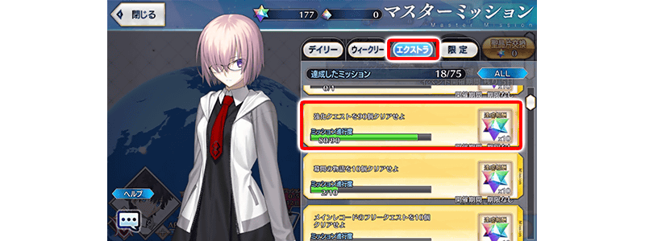
◆追加Extra任務◆
| 任務名稱 | 任務達成報酬 | |
|---|---|---|
| 通過『Lostbelt No.4 創世滅亡輪廻 由伽・剎多羅』 |

|
聖晶石 10個 |
| 通過『Lostbelt No.5 神代巨神海洋 亞特蘭提斯 擊落神之日』 |
|
聖晶石 10個 |
| 通過90個強化關卡 |
|
聖晶石 10個 |
| 通過100個強化關卡 |
|
聖晶石 10個 |
| 通過110個強化關卡 |
|
聖晶石 10個 |
| 通過120個強化關卡 |
|
聖晶石 10個 |
| 通過130個強化關卡 |
|
聖晶石 10個 |
| 通過140個強化關卡 |
|
聖晶石 10個 |
| 通過200個幕間物語 |
|
聖晶石 10個 |
| 通過210個幕間物語 |
|
聖晶石 10個 |
| 通過220個幕間物語 |
|
聖晶石 10個 |
| 通過190個主線記錄的自由關卡 |
|
聖晶石 10個 |
| 通過200個主線記錄的自由關卡 |
|
聖晶石 10個 |


向所有的御主對象，無論御主等級，「好友數」追加擴張5欄位。
因此初始值好友欄位20人擴張到25人。
並且，在下述的期間中「御主任務」的「限定」標籤內以期間限定追加「【5周年記念】任務」。
從追加本任務，無論「被承認好友申請」「承認好友申請」「跟隨其他玩家」哪個增加新好友或跟隨的話，會計算任務的人數。
通過所有任務的話，可得到呼符3張和魔力稜鏡100個！
◆翻新實施時間◆
2020年8月10日(一) 17:30～
◆任務舉辦期間◆
2020年8月10日(一) 17:30～8月24日(一) 11:59
◆報酬領取期間◆
2020年8月10日(一) 17:30～8月31日(一) 11:59
【好友欄位的擴張數】
| 對象持有欄位 | 擴張數 |
|---|---|
| 好友欄位的初期値 | 20→25(追加5人) |
◆追加任務◆
| 任務名稱 | 任務達成報酬 | |
|---|---|---|
|
【5周年記念】 增加好友・跟隨1人 |
|
魔力稜鏡 50個 |
|
【5周年記念】 增加好友・跟隨2人 |
|
魔力稜鏡 50個 |
|
【5周年記念】 增加好友・跟隨3人 |
|
呼符 1張 |
|
【5周年記念】 增加好友・跟隨4人 |
|
呼符 1張 |
|
【5周年記念】 增加好友・跟隨5人 |
|
呼符 1張 |
※請注意舉辦期間與領取期間有所差異。 ※請注意與每週日23:00更新的普通任務(Weekly)不同欄位，超過領取期間的話無法入手報酬。 ※就算達成「【5周年記念】任務」，也不會計算在普通任務(Weekly)的任務進行度。 ※就算在期間中減少好友數量的情況也不會減少任務進行度，不會讓已達成任務未達成。 ※只計算在舉辦期間中登錄好友或跟隨的玩家。 ※好友・跟隨1人算1次，同個玩家無法登入複數次。
修改不使用紋章移除器也可自由分離・替換指令紋章的功能。
※將刻印指令紋章的從者靈基變還(販賣)或當強化素材時，指令紋章會自動分離。
◆翻新實施時間◆
2020年8月10日(一) 17:30～
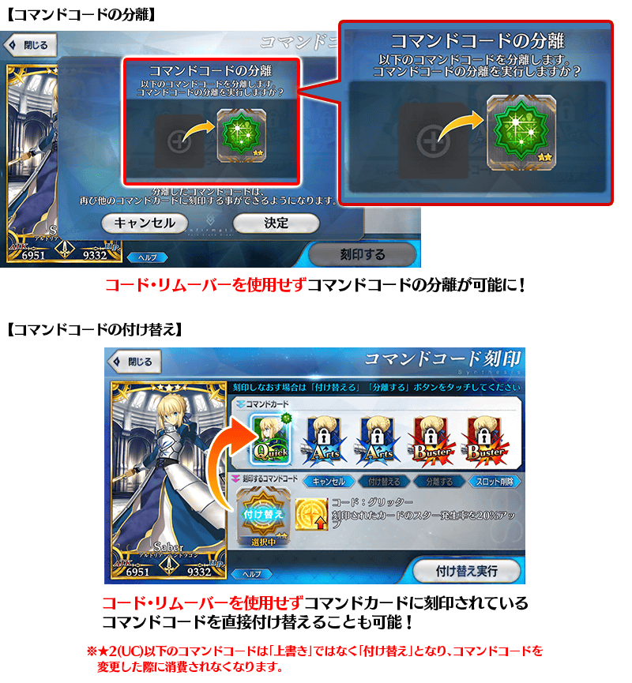
◆關於紋章移除器的用途變更◆
透過指令紋章變得能自由分離・替換，紋章移除器的用途變更成「刪除已開放的指令紋章插槽」。
刪除插槽的話會返還在開放插槽所使用指令紋章開啟器。
※刻印的指令紋章會自動分離。
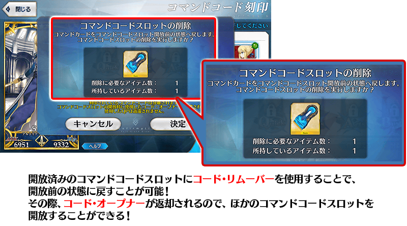
◆關於目前為止所使用的紋章移除器◆
隨著本修改，自2020年8月17日(一) 17:00會随時賦予目前為止所使用的紋章移除器至禮物箱。
※請注意在開放指令紋章插槽時所消耗的QP。
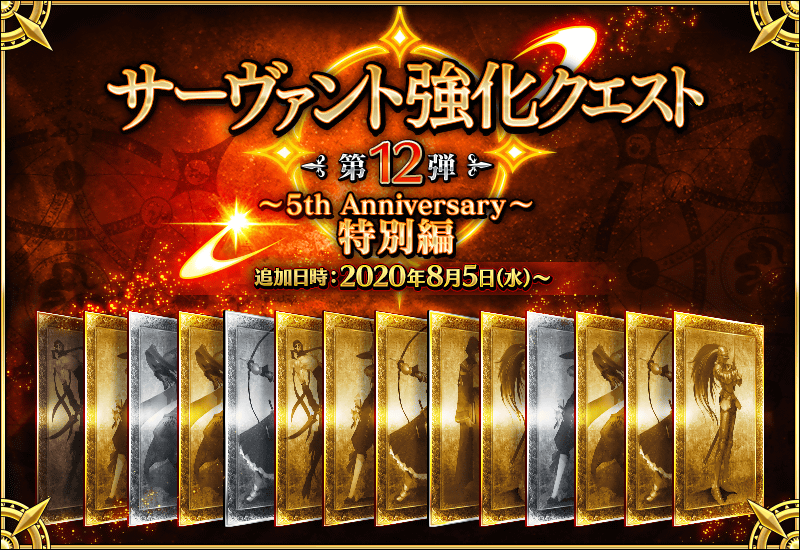
舉辦強化從者能力的特別關卡「從者強化關卡」的第12彈！
本次為了記念「Fate/Grand Order」5周年，合計14位從者的強化關卡在迦勒底之門永久追加！
合計14個強化關卡6天連續在迦勒底之門開放。
不僅進行對象從者的強化，也可獲得聖晶石做為關卡通過報酬。
※請注意在從者強化關卡沒有文字冒險部份。
◆追加時間◆
2020年8月5日(三) 17:00～
◆開放條件◆
持有的強化對象從者，必須使其最終再臨。
※未持有對象從者的話，不會出現關卡。
※關卡沒有舉辦期限。
➡ 介紹一部份本次的強化關卡對象從者！
介紹自2020年8月10日(一) 17:30追加強化關卡的4位從者。
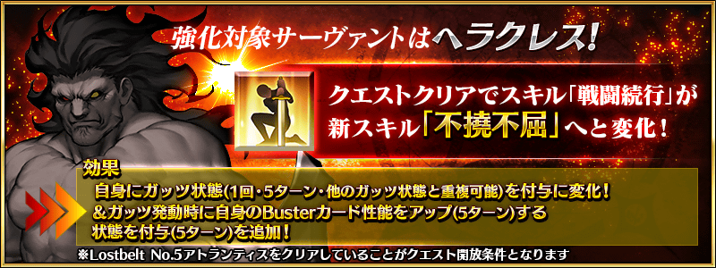
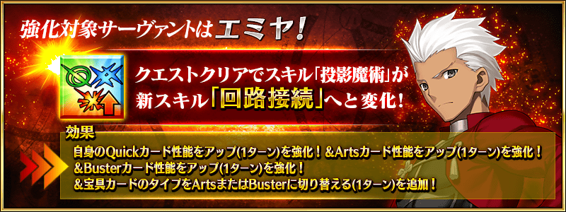
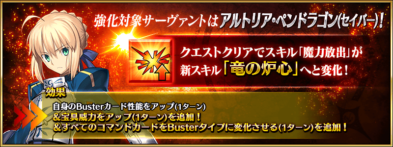

做為主線關卡的進行度報酬，對所有的進行度追加聖晶片1個。
通過所有現在公開的主線關卡的話，可得到1046個的聖晶片，換算聖晶石的話是149個份！
※有一部份進行度報酬對象外的關卡。
※已經通過主線關卡的玩家，會將對應已通過進行度的聖晶片送至禮物箱。
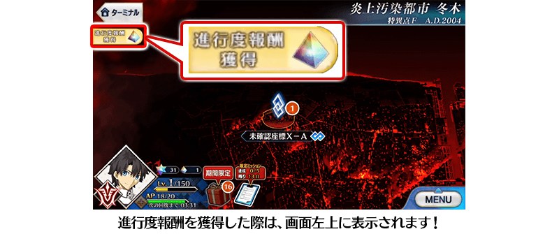
◆翻新實施時間◆
2020年8月10日(一) 17:30～
◆各章的進行度報酬◆
| 章節 | 章節合計進行度數 | 章節合計聖晶片數 | |
|---|---|---|---|
| 特異點F | 26 | 聖晶片 26個 | |
| 第一特異點 | 50 | 聖晶片 50個 | |
| 第二特異點 | 43 | 聖晶片 43個 | |
| 第三特異點 | 50 | 聖晶片 50個 | |
| 第四特異點 | 51 | 聖晶片 51個 | |
| 第五特異點 | 62 | 聖晶片 62個 | |
| 第六特異點 | 76 | 聖晶片 76個 | |
| 第七特異點 | 89 | 聖晶片 89個 | |
| 終局特異點 | 27 | 聖晶片 27個 | |
| 亞種特異點Ⅰ | 29 | 聖晶片 29個 | |
| 亞種特異點Ⅱ | 47 | 聖晶片 47個 | |
| 亞種特異點Ⅲ | 51 | 聖晶片 51個 | |
| 亞種特異點Ⅳ | 41 | 聖晶片 41個 | |
| 第2部序幕(プロローグ)「序」 | 8 | 聖晶片 8個 | |
| Lostbelt No.1 | 52 | 聖晶片 52個 | |
| Lostbelt No.2 | 66 | 聖晶片 66個 | |
| Lostbelt No.3 | 45 | 聖晶片 45個 | |
| Lostbelt No.4 | 70 | 聖晶片 70個 | |
| Lostbelt No.5(亞特蘭提斯) | 82 | 聖晶片 82個 | |
| Lostbelt No.5(奧林帕斯) | 81 | 聖晶片 81個 | |
第2部 第5章(亞特蘭提斯)為止的主線關卡的消耗AP1/2！
以期間限定舉辦的主線關卡第2部 第5章(亞特蘭提斯)為止的消耗AP1/2宣傳活動，變更成永久舉辦。
◆翻新實施時間◆
2020年8月10日(一) 17:30～

◆5周年記念限定◆
舉辦★5(SSR)從者之中「只限期間限定從者」對象，確定1位期間限定★5(SSR)從者，並且本次做為【5周年記念】特別確定1位含期間限定★4(SR)以上從者的「5周年記念福袋召喚(從者登場年別)」！
詳細請自述橫幅確認。
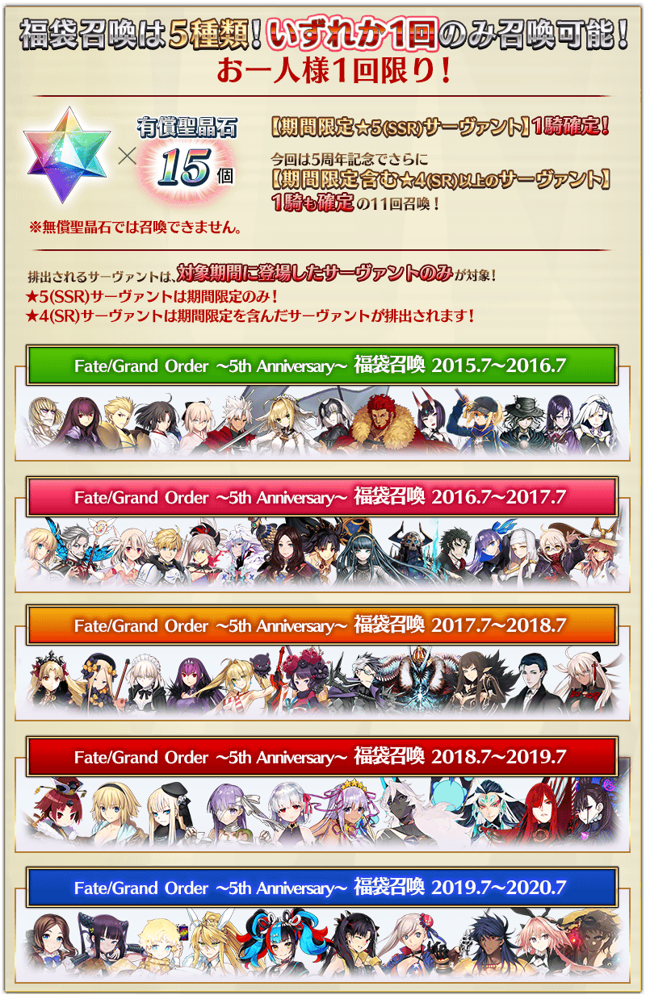
為了記念「Fate/Grand Order」5周年，下述從者的新靈衣登場！
・★5(SSR)阿周那
・★5(SSR)李奧納多・達文西(Rider)
・★4(SR)尼祿・克勞狄烏斯(Saber)
・★3(R)岡田以藏
・★1(C)保羅・班揚(靠漫畫了解Berserker)
追加的靈衣，通過以期間限定舉辦的靈衣獲得關卡後就能入手！
並且，做為靈衣獲得關卡通過報酬，也可獲得呼符1張。
※請注意在靈衣獲得關卡沒有文字冒險部份。
◆靈衣獲得關卡舉辦期間◆
2020年8月10日(一) 17:30～8月17日(一) 11:59
◆開放條件◆
滿足以下條件的御主才能參加
・通過「特異點F 炎上汙染都市 冬木」
◆有關靈衣開放權的注意◆
※5位從者的的靈衣開放權只限靈衣獲得關卡舉辦期間才能入手。
※本次追加5位從者的靈衣會配合外觀變化一部份語音。
※請注意未持有從者的情況，可入手靈衣開放權。但無法進行靈衣開放。
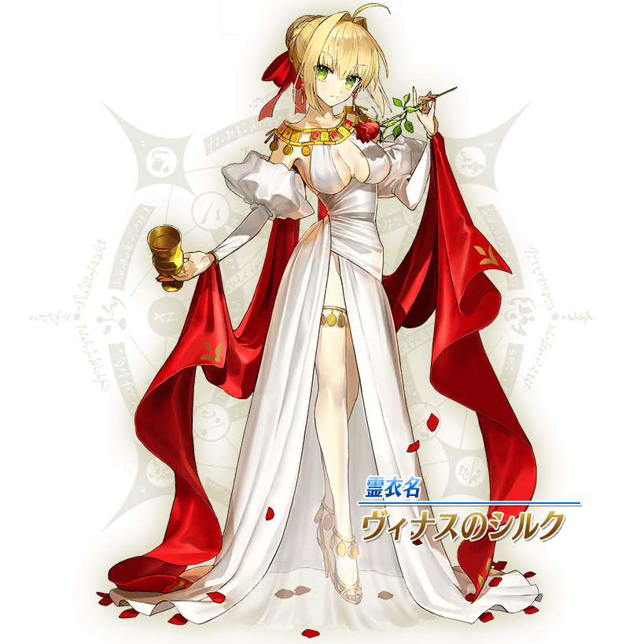
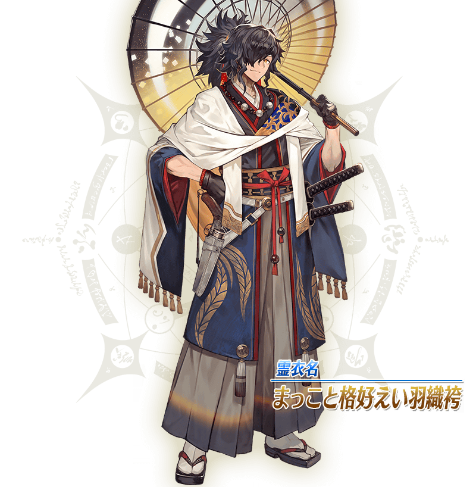
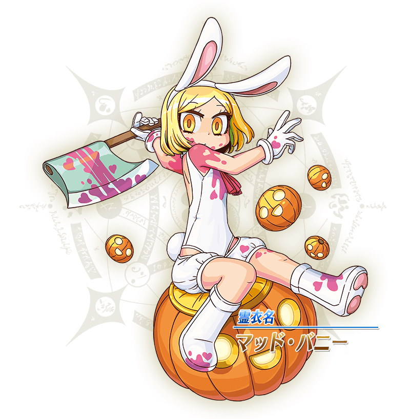

※「靈衣開放」後會自動切換戰鬥角色和圖示。若想回到「靈衣開放」前的狀態和變成其他再臨階段的情況，可自從者詳細畫面變更。 ※進行「靈衣開放」不會讓職階和能力等有所變化。

「靈衣開放」是自強化畫面進行。
再復刻期間限定活動「復刻:All the Statesman! ～靠漫畫了解合衆國開拓史～」！
通過逐日開放的關卡，得到活動限定從者「★1(C)保羅・班揚(靠漫畫了解Berserker)」吧！
並且！通過所有活動關卡的話，可獲得限定概念禮裝「★4(SR)マンガで分かる！FGO」！
◆舉辦期間◆
2020年8月10日(一) 17:30～8月17日(一) 11:59
以期間限定在達文西工房的「魔力稜鏡交換」追加下述的概念禮裝。
◆概念禮裝交換期間◆
2020年8月10日(一) 17:30～10月31日(六) 22:59
◆魔力稜鏡交換＆期間限定概念禮裝◆
| 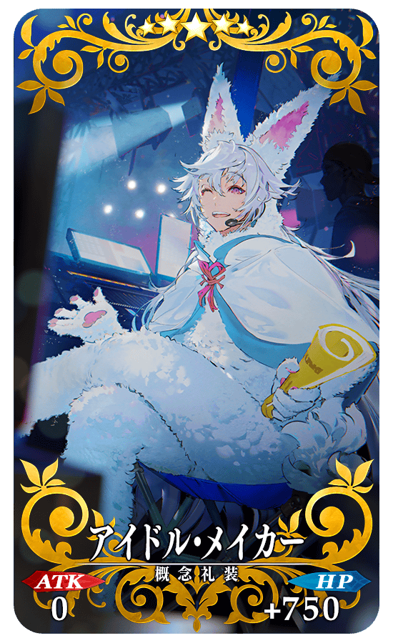 |
★★★★★SSR |
◆追加道具◆
| 追加道具 | 能交換次數 | 1次交換所需的 魔力稜鏡數 |
|---|---|---|
|
【期間限定】 アイドル・メイカー |
5次 | 1000個 |
◆道具交換期間◆
2020年8月10日(一) 17:30～8月24日(一) 11:59
◆追加道具◆
| 追加道具 | 能交換 次數 |
1次交換所需的 魔力稜鏡數 |
|
|---|---|---|---|
 |
【期間限定】 Quick紋章開啟器 |
3次 | 50個 |
| 【期間限定】 Arts紋章開啟器 |
3次 | 50個 | |
 |
【期間限定】 Buster紋章開啟器 |
3次 | 50個 |
| 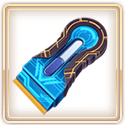 | 【期間限定】 紋章移除器 |
3次 | 100個 |
|
|
【期間限定】 呼符 |
10次 | 10個 |
|
|
【期間限定】 睿智的猛火ALL★4(SR)10張組 |
10次 | 20個 |
|
|
【期間限定】 英靈結晶・星之芙芙ALL★3(HP) |
30次 | 5個 |
|
|
【期間限定】 英靈結晶・太陽之芙芙ALL★3(ATK) |
30次 | 5個 |
以期間限定在達文西工房的「稀有稜鏡交換」追加下述的道具。
◆道具交換期間◆
2020年8月10日(一) 17:30～8月24日(一) 11:59
◆追加道具◆
| 追加道具 | 能交換 次數 |
1次交換所需的 稀有稜鏡數 |
|
|---|---|---|---|
 |
【期間限定】 迦勒底的夢火 |
1次 | 3個 |
| 【期間限定】 紋章移除器 |
3次 | 1個 | |
 |
【期間限定】 傳承結晶 |
1次 | 5個 |
|
|
【期間限定】 英靈結晶・流星之芙芙ALL★4(HP) |
1次 | 3個 |
|
|
【期間限定】 英靈結晶・日輪之芙芙ALL★4(ATK) |
1次 | 3個 |
|
|
【期間限定】 友情點數 20,000pt |
5次 | 1個 |
在達文西工房的「稀有稜鏡交換」，「指令卡強化」必須的強化素材「獸之足跡」做為每月限定道具追加。
◆追加時間◆
2020年8月10日(一) 17:30～
◆追加道具(永久)◆
| 追加道具 | 能交換 次數 |
1次交換所需的 稀有稜鏡數 |
|
|---|---|---|---|

|
獸之足跡 | 1次 | 1個 |


以期間限定舉辦阿爾托莉亞・Caster的體驗關卡！
可迎接「★5(SSR)阿爾托莉亞・Caster」做為支援成員，挑戰期間限定的關卡！
別錯過體驗從者技能與寶具的機會！
※請注意在阿爾托莉亞・Caster的體驗關卡沒有文字冒險部份。
◆阿爾托莉亞・Caster體驗關卡舉辦期間◆
2020年8月10日(一) 17:30～8月24日(一) 11:59
◆開放條件◆
滿足以下條件的御主才能參加
・通過「特異點F 炎上汙染都市 冬木」
◆關卡通過報酬◆
呼符 1張

變更「★5(SSR)阿爾托莉亞・潘德拉剛(Saber)」的指令階段中的待機動作！ ※只追加待機動作，沒有變更戰鬥動作及寶具演出。
◆追加時間◆
2020年8月10日(一) 17:30～
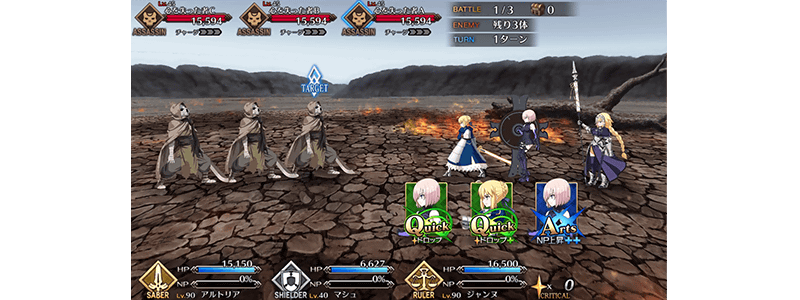

介紹2020年8月10日(一)的更新後，新追加的功能。
◆追加時間◆
2020年8月10日(一) 17:30～
在管理室(ターミナル)畫面顯示聖晶石與聖晶片的持有數
管理室(ターミナル)畫面中，修改成會顯示現在的聖晶石與聖晶片的持有數顯示。
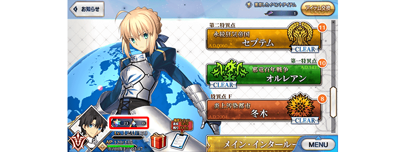
教學小翻新！
・教學召喚畫面的設計修改
教學召喚中，調整移動至召喚前畫面和教學召喚畫面的背景，顯示修改成更易懂從者。
・在教學中的支援選擇追加「推薦支援」
教學中的支援選擇畫面中，修改成容易選擇強力從者。
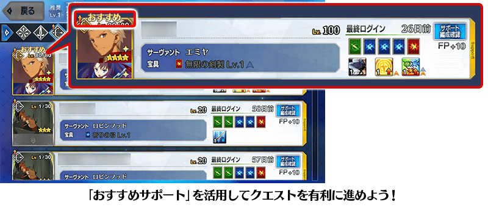
其他還有，『「FGO 迦勒底放送局 5周年SP ～under the same sky～」播送前夕宣傳活動』和期間限定「5周年記念Pick Up召喚(每日交替)」同時舉辦！
關於詳情，請自下述橫幅確認。
■「FGO 迦勒底放送局 5周年SP ～under the same sky～」播送前夕宣傳活動詳細情報 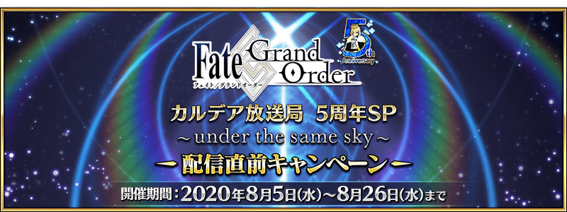
■「5周年記念Pick Up召喚(每日交替)」詳細情報